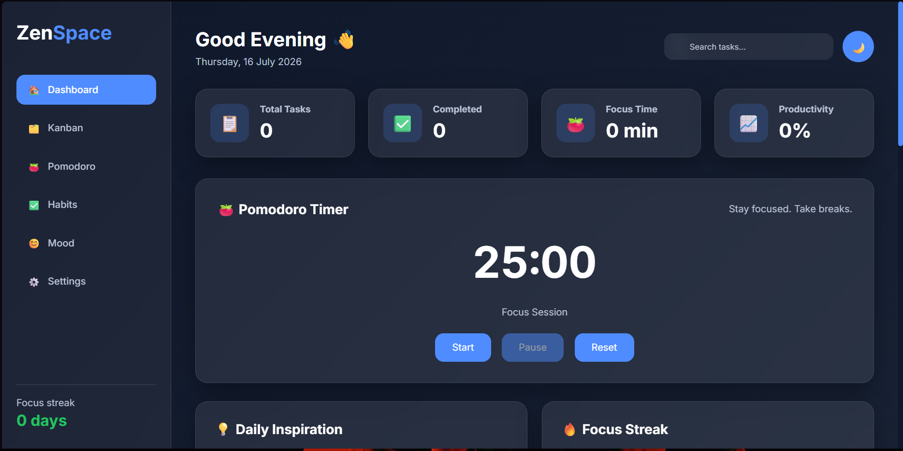
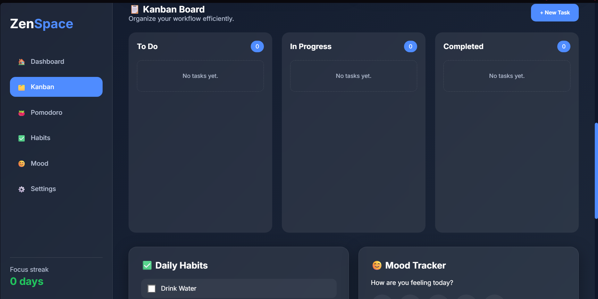
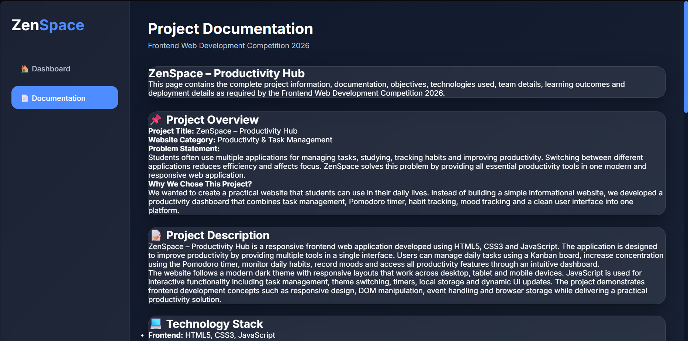
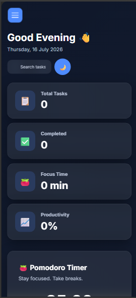

Project Documentation
Frontend Web Development Competition 2026
ZenSpace – Productivity Hub
This page contains the complete project information, documentation, objectives, technologies used, team details, learning outcomes and deployment details as required by the Frontend Web Development Competition 2026.
📌 Project Overview
Project Title: ZenSpace – Productivity Hub
Website Category: Productivity & Task Management
Problem Statement:
Students often use multiple applications for managing tasks, studying, tracking habits and improving productivity. Switching between different applications reduces efficiency and affects focus. ZenSpace solves this problem by providing all essential productivity tools in one modern and responsive web application.
Why We Chose This Project?
We wanted to create a practical website that students can use in their daily lives. Instead of building a simple informational website, we developed a productivity dashboard that combines task management, Pomodoro timer, habit tracking, mood tracking and a clean user interface into one platform.
📝 Project Description
ZenSpace – Productivity Hub is a responsive frontend web application developed using HTML5, CSS3 and JavaScript. The application is designed to improve productivity by providing multiple tools in a single interface. Users can manage daily tasks using a Kanban board, increase concentration using the Pomodoro timer, monitor daily habits, record moods and access all productivity features through an intuitive dashboard.
The website follows a modern dark theme with responsive layouts that work across desktop, tablet and mobile devices. JavaScript is used for interactive functionality including task management, theme switching, timers, local storage and dynamic UI updates. The project demonstrates frontend development concepts such as responsive design, DOM manipulation, event handling and browser storage while delivering a practical productivity solution.
💻 Technology Stack
- Frontend: HTML5, CSS3, JavaScript
- Deployment: GitHub & Vercel
- Browser Storage: Local Storage
- Icons: Emoji Icons / Font Awesome (if used)
- Fonts: Google Fonts (if used)
👨💻 Team Information
Name: Dhanush Premraj
Department: Artificial Intelligence & Machine Learning
Year: 7th Semester
Participation: Individual Participant
✅ Team Contribution
This project was completed independently. All stages including planning, UI/UX design, HTML structure, CSS styling, JavaScript functionality, responsiveness, testing, GitHub repository management and Vercel deployment were completed by the participant.
🚧 Challenges Faced
During the development of ZenSpace, the biggest challenge was integrating multiple productivity features such as the Kanban board, Pomodoro timer, habit tracker and mood tracker into one responsive interface. Ensuring that JavaScript functionality, local storage and responsive layouts worked smoothly across desktop and mobile devices required continuous debugging and testing. These challenges improved our understanding of frontend development and problem-solving.
📚 Learning Outcomes
- HTML5 Page Structure
- CSS3 Flexbox & Grid
- Responsive Web Design
- Media Queries
- JavaScript DOM Manipulation
- Event Handling
- Form Validation
- Local Storage
- Git & GitHub
- Deployment using Vercel
🚀 Future Improvements
- User Login & Authentication
- Cloud Sync
- Calendar Integration
- Notifications & Reminders
- AI Productivity Assistant
- Data Analytics Dashboard
🔗 GitHub Repository
https://github.com/DhanushPremraj/ZenSpace
🌐 Live Website
https://zenspace-liart.vercel.app
💬 Feedback on Frontend Web Development Training
The Frontend Web Development Training helped me strengthen my understanding of HTML, CSS and JavaScript through practical sessions and project-based learning. Building ZenSpace allowed me to apply responsive design, DOM manipulation, event handling, local storage and deployment concepts in a real-world project. The training improved my confidence in frontend development and gave me hands-on experience with GitHub and Vercel. Overall, it was a valuable learning experience that enhanced both my technical skills and problem-solving ability.
📄 Declaration
I hereby declare that this project was developed by me for the Frontend Web Development Competition 2026. The project is my original work. External resources such as fonts and icons have been used only where necessary and appropriately acknowledged.
📸 Project Screenshots
- Home Page Screenshot
- Kanban Board Screenshot
- Documentation Page Screenshot
- Mobile Responsive View
🎉 Thank You
Developed by: Dhanush Premraj
ZenSpace – Frontend Web Development Competition 2026
📸 Project Screenshots
🏠 Home Page

📋 Kanban Board

📄 Documentation Page

📱 Mobile View
